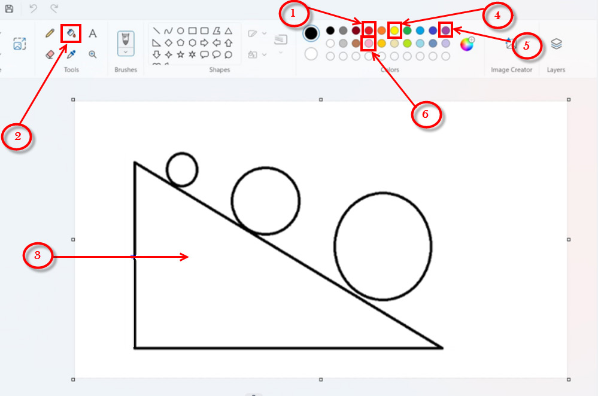

Baada ya kufungua programu na kuhifadhi kazi, hatua zinazofuata ni kuweka rangi.
Kupaka rangi maumbo
Kupaka rangi fuata hatua zifuatazo:
Hatua
1.
Bofya au tumia mishale kwenye rangi nyekundu ‘Red’ kama inavyoonekana katika Kielelezo namba 10.
2.
Bofya au tumia mishale jaza ‘Fill’.

3.
Bofya au tumia mishale ndani ya eneo la pembetatu mraba na paka rangi nyekundu. Pembetatu iliyopakwa rangi nyekundu inaonekana kwenye Kielelezo namba 11.